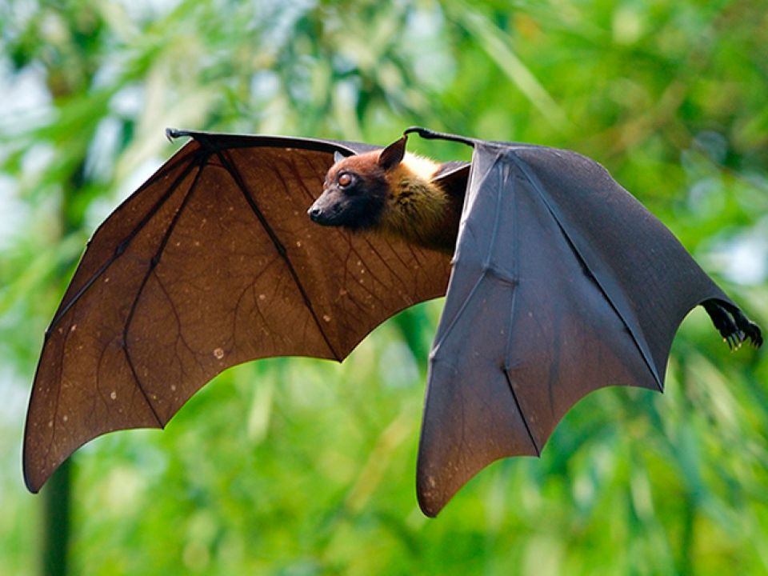

Murcielagos
(Chiroptera)

Los murciélagos poseen varios hábitats, aunque prefieren cuevas, árboles, troncos, grietas y otros
lugares huecos y húmedos. En general, cualquier hábitat que tenga suficiente alimento, una temperatura adecuada y un
lugar para dormir e hibernar sin peligros. La mayoría de los murciélagos comen insectos, por lo que se los llama insectívoros.
A estos murciélagos les encanta comer mosquitos, escarabajos y polillas. Y comen muchos: ¿Sabías que un pequeño murciélago
marrón puede comer 1200 mosquitos en una hora? ¡Eso si que es una gran cantidad de insectos!
- Se caracterizan principalmente por su capacidad de volar y por la especialización anatómica que les permite el vuelo
- Los murciélagos son animales vivíparos
- el periodo de gestación es muy variable, con una duración entre 40 días hasta 10 meses
- El más pequeño de ellos pesa alrededor de 1,5 gramos pudiendo el más grande de su especie llegar a alcanzar los 1,2 kilos,
y medir 1,5 metros de envergadura.
- la mayoría de las especies de murciélagos que habitan en Veracruz tienen una masa menor a la de una moneda de 10 pesos,
y 32 especies tienen una masa menor a la de una moneda de 5 pesos
REGRESAR AL MENU